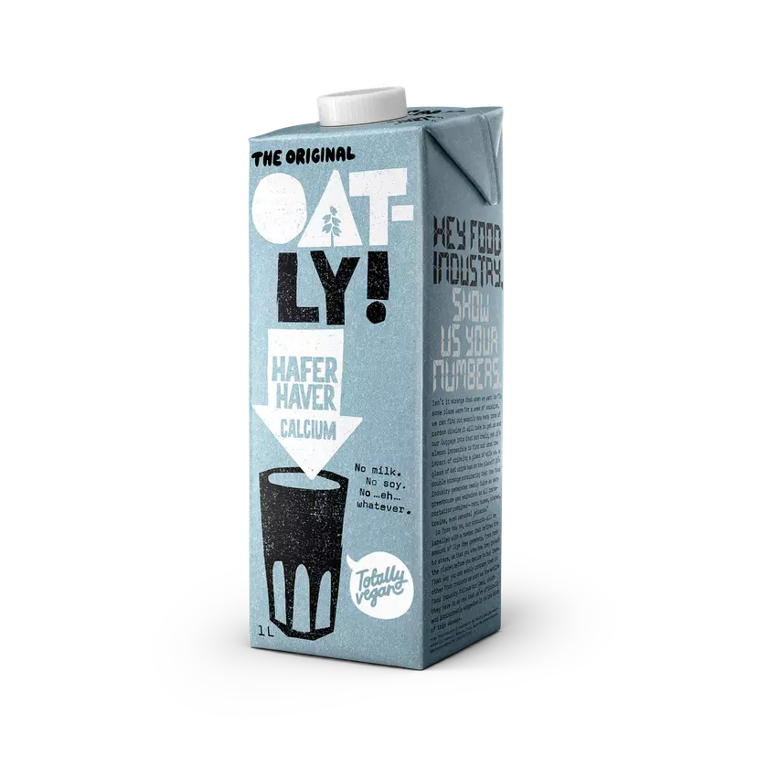
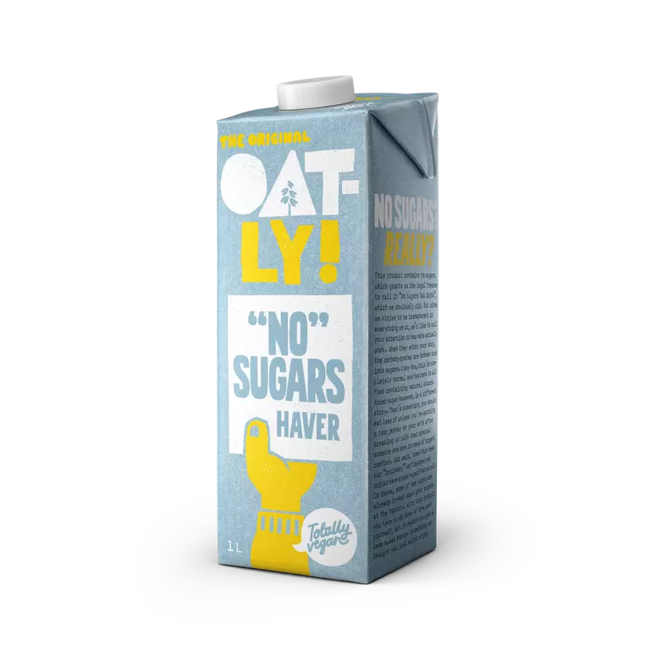
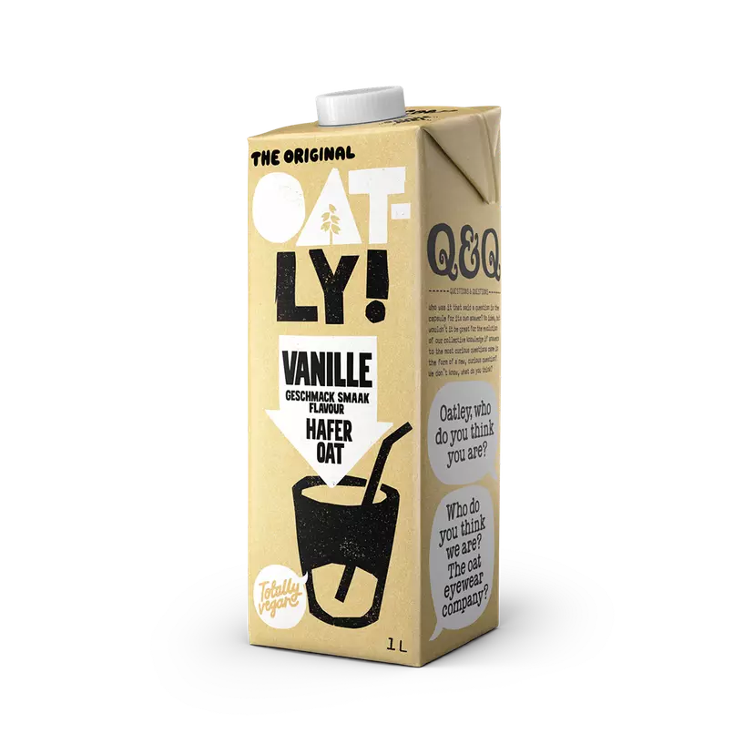
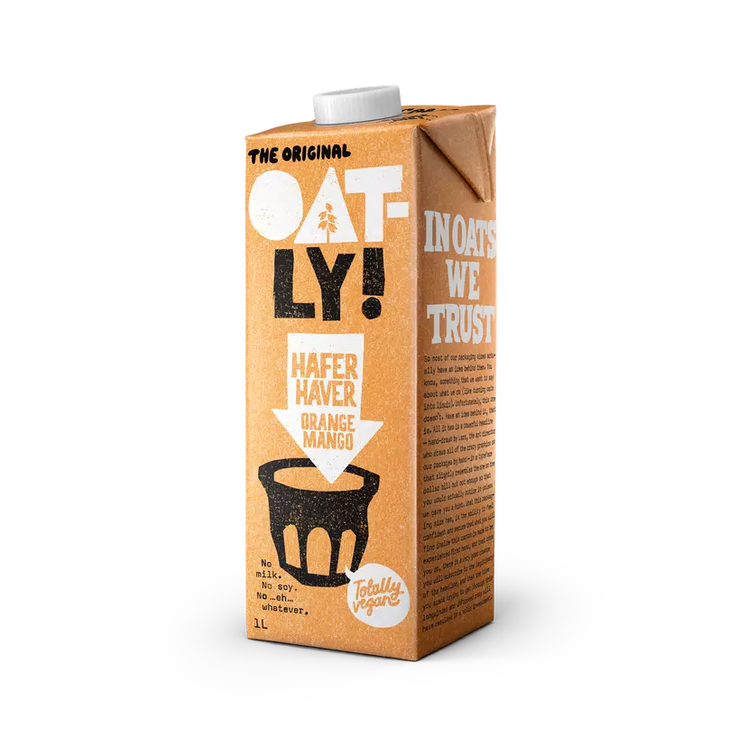

Haverdrank Barista Edition

Climate Footprint 0,52 kg Co2E
Dus jij bent een barista? Leuk. Wij zijn het bedrijf dat de haverdrank heeft uitgevonden. Ook best leuk. Nu zijn we er erin geslaagd een haverdrank te ontwikkelen die je kunt laten schuimen en die gewoon fantastisch smaakt in de koffie. Hij is (zoals al onze producten) volledig plantaardig, dus als je vrolijk wordt van een goede latte, dan is het misschien goed om te weten dat ook de planeet hier vrolijk van wordt. Als je begrijpt wat we bedoelen.
stuff
- 
- 
- 
- 
Ingredients
Water, HAVER 10%, koolzaadolie, zuurteregelaar (dikaliumfosfaat), mineralen (calciumcarbonaat, kaliumjodide), zout, vitaminen (D2, riboflavine, B12).
Nutrition value
Voedingswaarde per 100 ml:
| Energie | 257 kJ/61 kcal |
| Vetten | 3,0 g |
| waarvan verzadigde vetzuren | 0,3 g |
| Koolhydraten | 7,1 g |
| waarvan suikers | 3,4 g* |
| Vezels | 0,8 g |
| Eiwitten | 1,1 g |
| Zout | 0,10 g |
| Vitamine D | D 1,1 μg (22%**) |
| Riboflavine | 0,21 mg (15%**) |
| Vitamine B12 | 0,38 μg (15%**) |
| Calcium | mg (15%**) |
| Jodium | 22,5 µg (15%**) |
*Natuurlijke suikers uit haver. **Van de voedingswaardereferenties
What's amazing
Het is vooral ontzettend lekker. En jij kunt schitteren met hartjes en blaadjes in het schuim. Net als anders. Je vervangt gewoon de gewone melk door eenzelfde hoeveelheid Haverdrank Barista Edition. En dan hebben we het nog niet eens gehad over alle nuttige aspecten van Haverdrank Barista Edition, zoals het feit dat de koolzaadolie in hoge percentages van onverzadigde vetzuren resulteert.
What might be less amazing
We waren genoodzaakt om wat zuurteregelaar toe te voegen om Haverdrank Barista Edition zich op de juiste manier te laten gedragen. We schaven het recept voortdurend bij om zo min mogelijk toevoegingen te hoeven gebruiken. Je kunt erop vertrouwen dat alles wat in onze producten zit buitengewoon zorgvuldig is geselecteerd en wetenschappelijk is goedgekeurd voor consumptie. Alles is plantaardig en we gebruiken nooit melk, soja of GMO’s. We herhalen: nooit ofte nimmer GMO’s.
Last but not least
Vervang de melk door dezelfde hoeveelheid Haverdrank Barista Edition en gebruik deze op dezelfde manier bij je baristakunsten. Schuimt heerlijk. Smaakt nog beter.*Haverdrank Barista Edition heeft een hoog percentage onverzadigd vet. Het vervangen van verzadigd vet in voeding door onverzadigd vet draagt bij aan het bewaren van normale cholesterolniveaus in het bloed. Meer vragen? Vraag onze Community!
STUFF YOU MIGHT LIKE IN NO PARTICULAR ORDER
info
info
info
info